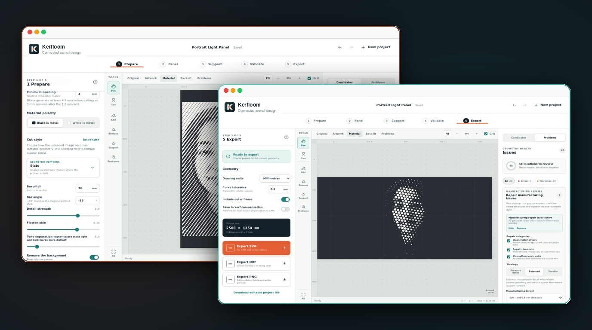

Entre bastidores
pwa-kit
Una pequeña pieza que ayuda a las aplicaciones web a funcionar sin conexión y mantenerse actualizadas.
Una pequeña consola para gestionar invitaciones y dispositivos en aplicaciones web privadas.

Una página para la invitación y la administración del dispositivo de cada aplicación detrás del mecanismo de invitación.
Es la única GUI de administración: las aplicaciones solían llevar una cada una, lo que significaba múltiples pestañas abiertas y múltiples lugares para recordar. Vive en su propio repositorio porque no pertenece a ninguna de las aplicaciones que presenta.
Tailscale TLS termina frente al oyente privado, restringiendo el acceso administrativo estrictamente a los nodos Tailnet autorizados sin puntos finales públicos expuestos ni contraseñas codificadas.
Los nombres, los destinatarios de las invitaciones, las clases y los niños de estas capturas están anonimizados y difuminados.


Una pequeña pieza que ayuda a las aplicaciones web a funcionar sin conexión y mantenerse actualizadas.

Convierte una fotografía en patrones conectados para recortarlos en metal.

Un pequeño planeta en tu bolsillo. Explora la Tierra con datos astronómicos actuales y de la NASA.